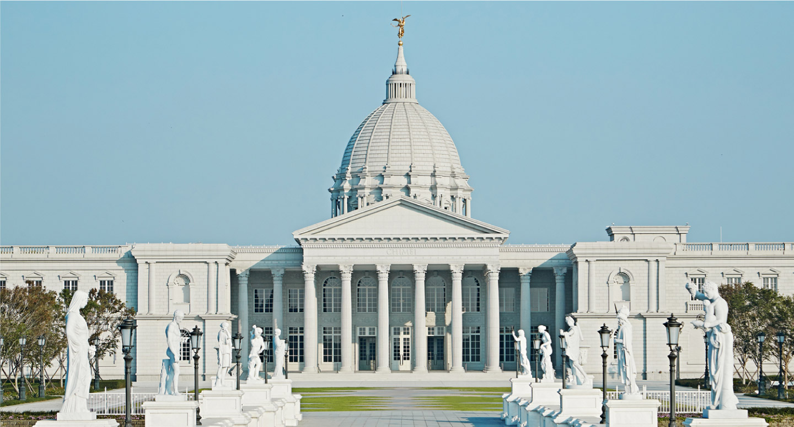
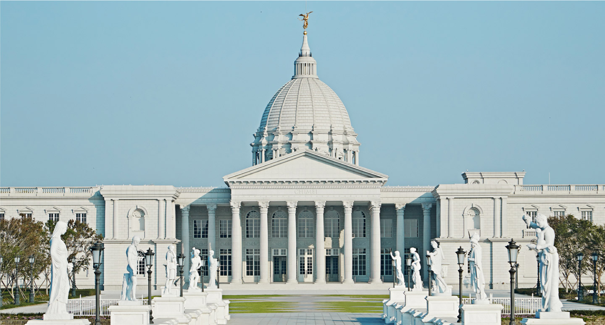

景點介紹
奇美博物館，位於中華民國臺南市仁德區，為奇美實業創辦人許文龍創立，是臺灣館藏最豐富的私人博物館、美術館。以典藏西洋藝術品為主，展出藝術、樂器、兵器與自然史四大領域。樂器領域，擁有全球數量最多小提琴收藏，其中包含世界各大製琴師名作。藝術方面，典藏台灣最完整西方繪畫雕塑，目標為建構出基礎西洋藝術史脈絡。兵器領域，展示亞洲最完整之各國珍貴古兵器，透過戰爭兵器呈現歷史與科技演進史。自然史領域，擁有亞洲最大動物標本收藏，範圍涵蓋五大洲哺乳類及鳥類。
奇美博物館，位於中華民國臺南市仁德區，為奇美實業創辦人許文龍創立，是臺灣館藏最豐富的私人博物館、美術館。以典藏西洋藝術品為主，展出藝術、樂器、兵器與自然史四大領域。樂器領域，擁有全球數量最多小提琴收藏，其中包含世界各大製琴師名作。藝術方面，典藏台灣最完整西方繪畫雕塑，目標為建構出基礎西洋藝術史脈絡。兵器領域，展示亞洲最完整之各國珍貴古兵器，透過戰爭兵器呈現歷史與科技演進史。自然史領域，擁有亞洲最大動物標本收藏，範圍涵蓋五大洲哺乳類及鳥類。
